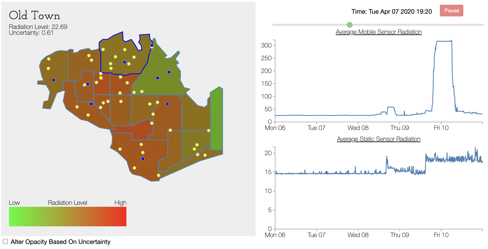

MissIt Rides is a proof of concept research project for MissIt, a technology developed by Professor Fahad Dogar which provides free low-rate data transfer by leveraging missed calls. For this project, my partner and I built a ride sharing platform that could be utilized in conjunction with the MissIt communication channel to provide an option for those with limited internet access. We used React Native for the frontend and hosted our Flask API on Google Cloud. For more information on our process and user studies you can check out our paper, and the source code can be found here.
For our final project my partner and I built a number of improvements on top of Max van der Schee's Web Accessibility VSCode Extension. The extension is primarily coded using Typescript, although I also implemented an image text recognition feature to suggest alt text using Python. You can find our extension on the VSCode Marketplace, which also has a link to our source.
ScriptCheck is a mobile application which uses machine learning to identify pills. We built the UI using React Native, while the model used for image recognition was developed in Python. This was my first foray into ML and attempted before taking any classes on the subject, and there is definitely a long list of flaws both in the design of the model and in its resulting performance. Regardless, this project made for a good learning experience and jumping off point. If you're interested in learning more about our inspiration and process you can read our paper.
For my group's final we developed a dashboard based on the 2019 VAST Challenge Mini Challenge 2. The dashboard was built using D3.js to showcase radiation levels over time and our uncertainty calculations. More information on our data analysis and findings can be found here.
